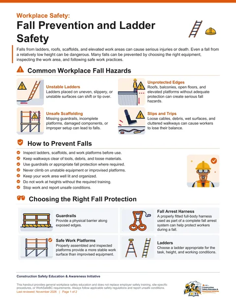
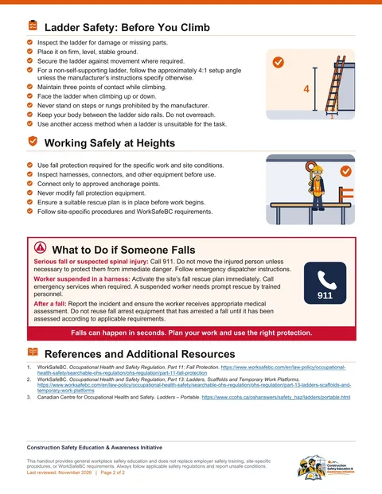
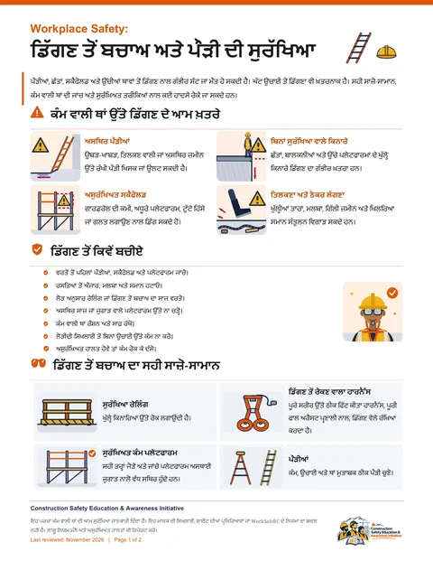
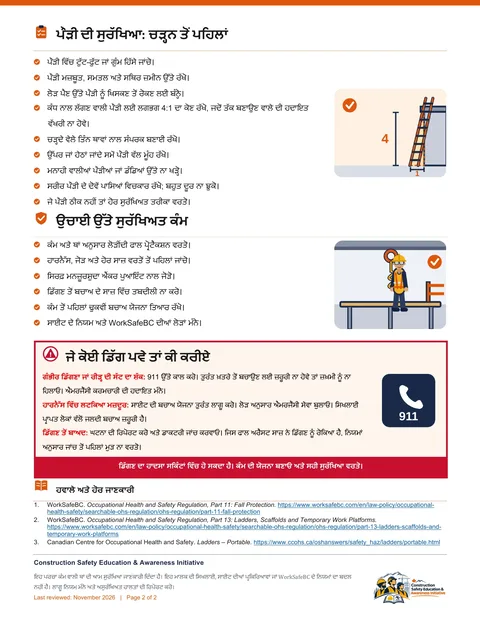

Fall Preventionਡਿੱਗਣ ਤੋਂ ਬਚਾਅ ਅਤੇ ਪੌੜੀ ਦੀ ਸੁਰੱਖਿਆ
- Inspect ladders, scaffolds, and work platforms before use.ਵਰਤੋਂ ਤੋਂ ਪਹਿਲਾਂ ਪੌੜੀਆਂ, ਸਕੈਫੋਲਡ ਅਤੇ ਪਲੇਟਫਾਰਮ ਜਾਂਚੋ।
- Keep walkways clear of tools, debris, and loose materials.ਰਸਤਿਆਂ ਤੋਂ ਔਜ਼ਾਰ, ਮਲਬਾ ਅਤੇ ਸਮਾਨ ਹਟਾਓ।
- Use guardrails or appropriate fall protection where required.ਲੋੜ ਅਨੁਸਾਰ ਰੇਲਿੰਗ ਜਾਂ ਡਿੱਗਣ ਤੋਂ ਬਚਾਅ ਦਾ ਸਾਜ਼ ਵਰਤੋ।


Handoutsਜਾਣਕਾਰੀ ਪੱਤਰ

Open full pageEnglish · page 1 
Open full pageEnglish · page 2 
Open full pagePunjabi · page 1 
Open full pagePunjabi · page 2